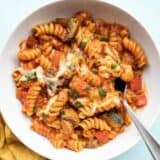

Pasta recipe

Description
This fresh, vibrant, and utterly delicious Tortellini Salad feeds a crowd on a dime. My favorite part? It only takes a few minutes to put together. Plus, you can make it ahead of time and store it in the fridge for up to 3 days. Win! Win! Win! It’s perfect for picnics, potlucks, or a light lunch at home. Get ready to put this Tortellini Salad recipe on repeat!.
Ingredients
- Tortellini
- Cherry tomatoes
- Parmesan cheese
- Baby spinach and Italian Parsley
- Red onion
Steps
- First, cook the tortellini according to the package directions. Then drain well and cool in a very large bowl in the fridge.
- While the tortellini is cooking, slice the summer squash and the zucchini into 1/4-inch rounds and then quarter the rounds. Add them to a large bowl and sprinkle with salt and mix.
- Slice the cherry tomatoes in half. Slice the red onion in 1/4 inch half moons and soak it in cold water to dull its sharp flavor. Chop the parsley, and if the baby spinach leaves are large, chop them as well.
- Next, top the salad with chopped Italian parsley and Parmesan cheese. Then drizzle with the final 1/4 cup of Italian dressing.